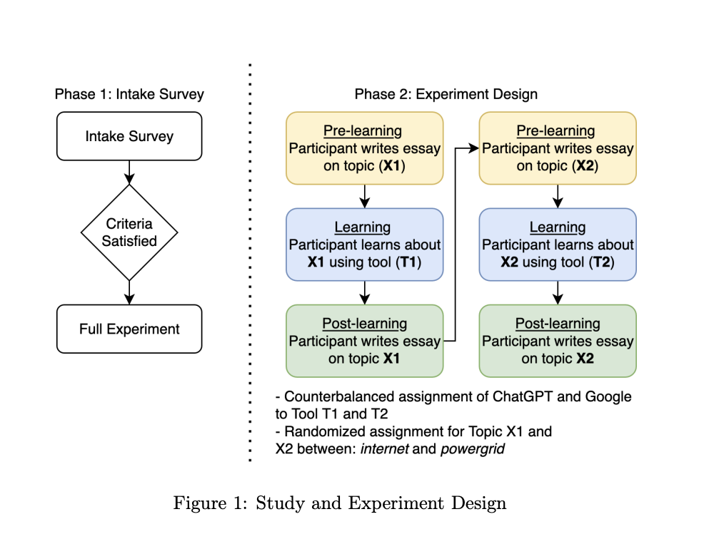
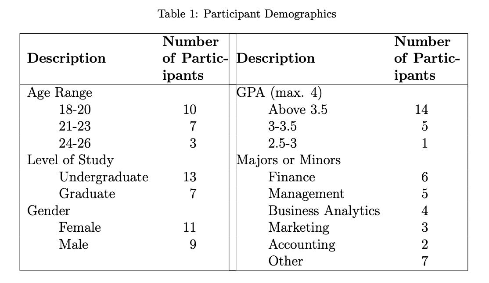
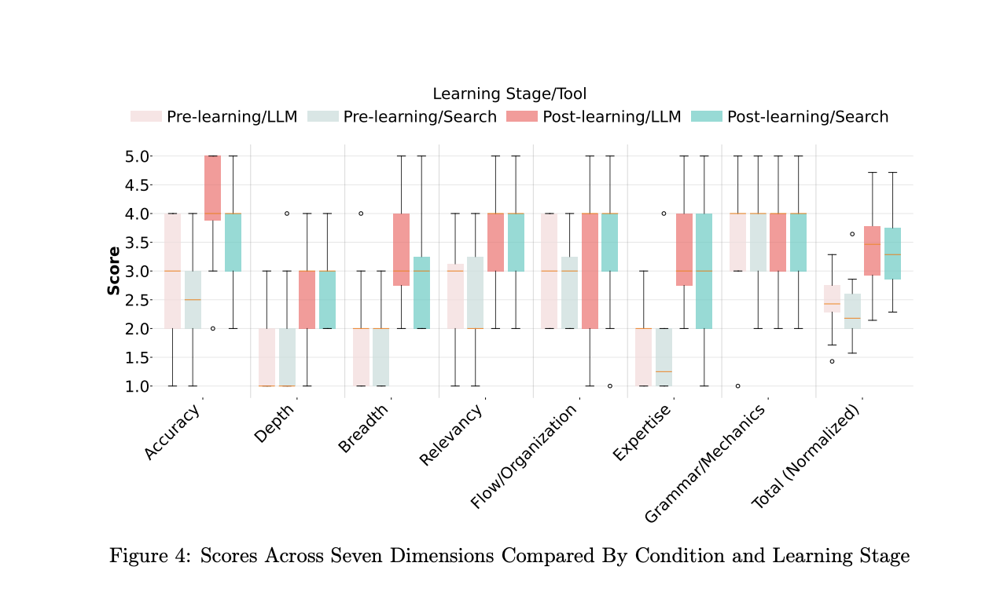

Exploring the Interaction-Outcome Paradox in Learning with LLMs
Co-authored research on university students’ AI tool selection - accepted to AIED 2025 (Italy) & presented at UXPA Boston 2025.
Key Findings
Even when LLM interactions were longer and more self-aware, students’ essay scores ended up similar to those after search.
LLMs moved effort from stitching sources together to prompting and sense‑making — but that shift alone didn’t guarantee better learning.
Traditional search led to more plagiarism flags than LLMs, which challenges students’ intuition about what feels “safer.”
The results point to a UX challenge: we need tools and assessments that reward genuine understanding, not just polished AI‑assisted essays.
Overview
As an Undergraduate Research Assistant and Co-Author in the Experience Design Department at Bentley University, I contributed to a controlled study that compared how university students learn with Large Language Models (LLMs) versus traditional search. We analyzed not just whether tools like ChatGPT “help students learn,” but how the interaction itself changes when students move from keyword search to conversational AI - and what that means for learning outcomes, cognitive load, and even plagiarism risk.
This work resulted in the paper “Exploring The Interaction–Outcome Paradox: Seemingly Richer and More Self-Aware Interactions with LLMs May Not Yet Lead to Better Learning”, accepted to the 2025 International Conference on Artificial Intelligence in Education (AIED) in Italy and presented at UXPA Boston 2025.
From survey to experiment
This project started with a survey of 68 Bentley students to map their real AI toolkits for learning. On average, students used about 3–4 different tools (most commonly Google, ChatGPT, YouTube, and Wikipedia), and 100% of our sample had tried ChatGPT. They described using ChatGPT to learn difficult concepts, write and edit essays and emails, brainstorm ideas, and even support coding and data analysis.
Students also told us that “expertise” with AI meant being able to prompt well, spot errors, and apply the knowledge - not just getting an answer. From that survey, we recruited a subset of technically comfortable students (familiar with both search and ChatGPT, actively enrolled, over 18, and not in certain design programs) into the lab experiment described below.
Study design
We ran a within-subjects experiment with 20 university students, asking each participant to learn two technical topics (“How does the internet work?” and “How does the power grid work?”) using either a search engine (Google) or an LLM-based tool (ChatGPT). After each learning session, students wrote an essay so we could compare what changed in their understanding.

To capture the full learning journey, we analyzed three layers of data:
- Input - what students typed into each tool (word count, vocabulary richness, prompt types, timing, and interaction patterns from screen recordings).
- Output - the essays they produced (text complexity, length, structure, and overlap with web sources using tools like TextEvaluator and Grammarly).
- Outcome - expert-graded scores across seven dimensions (accuracy, depth, breadth, relevancy, flow, mechanics, and demonstrated expertise).

My role
I contributed across the full lifecycle of this research. I helped design and pilot the study materials, coordinated participant recruitment and scheduling, and supported in-person study sessions. I worked with screen recordings and transcripts to code and analyze students’ interactions (e.g., prompt types, lexical richness, and behavior differences between LLM and search). I also contributed to synthesizing results - especially around the Interaction–Outcome Paradox and the plagiarism implications - and helped shape how we communicated those findings in the paper and conference presentations.
Key findings: the interaction–outcome paradox
We found that learning with LLMs led to much richer interactions - students wrote longer, more varied prompts, used more self-aware language about what they did and didn’t understand, and frequently asked the LLM to adjust difficulty, give examples, or reformat explanations. In contrast, search interactions stayed closer to short keyword queries.
Despite this richer interaction, learning outcomes did not significantly improve: essays written after using LLMs and search were similar in complexity and expert-graded quality, with only a small edge for LLMs on accuracy. Both tools clearly improved learning compared to the pre-test, but neither “won” outright. We call this the Interaction–Outcome Paradox - LLMs appear to shift cognitive effort away from manually stitching together sources and toward articulating knowledge gaps and prompting, but that shift alone does not automatically translate into better grades.

We also uncovered a second, practical tension: essays written after using traditional search were more likely to be flagged for plagiarism by off-the-shelf tools, even when students were synthesizing content in good faith, because search pushes them toward remixing visible web text. LLM-based essays, by contrast, were rarely flagged, even though students sometimes relied heavily on generated content. This raises important questions about fairness, AI literacy, and how we design assessment in an LLM-saturated world.
Note on timing: This study was conducted in 2024, and all findings (including plagiarism detection) reflect AI tools and LLMs as they existed then. Because AI and detection technologies are evolving at incredible speed, today’s systems may behave differently than the ones we evaluated.
Intro classroom slide deck
Scope & outcomes
- Structured interview protocols - Designed and implemented for consistent, rigorous data collection.
- 50 participants - Coordinated scheduling and logistics across the study.
- In-depth interviews with all 20 participants - Personally gathered rich qualitative and quantitative data on how students use AI tools for learning.
- Product usage analysis - Evaluated adoption drivers and trust barriers for LLMs in educational contexts.
- Co-authored paper - Accepted to the 2025 International Conference on Artificial Intelligence in Education (AIED).
- Presentations - AIED 2025 (Italy) and UXPA Boston 2025.
Conclusion
This project shows that how students interact with AI is changing much faster than what they get out of it: LLMs encourage richer, more self-aware prompting, but on their own they don’t automatically deliver better learning outcomes than search. At the same time, today’s plagiarism tools are more likely to flag work that comes from traditional web research than from LLMs, which flips some students’ intuitions about what feels “safer.”
As a UX researcher and designer, I see this as a design problem: we need learning tools and assessment systems that leverage expressive, conversational interactions while still scaffolding genuine understanding and fair evaluation. My work on this study is one of the ways I’m trying to build that future.